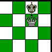
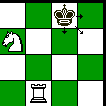
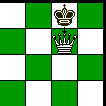
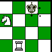

déplacer le roi pour éviter l'échec
interposer une pièce entre l'attaquant et le roi :
Lorsqu'un roi est en échec et qu'aucun coup réglementaire ne permet de l'y soustraire
, il est « mat » et la partie est terminée.
déplacer le roi pour éviter l'échec
interposer une pièce entre l'attaquant et le roi :
Lorsqu'un roi est en échec et qu'aucun coup réglementaire ne permet de l'y soustraire
, il est « mat » et la partie est terminée.
Une partie d'échecs se termine soit par la victoire d'un joueur sur l'autre, soit par la nulle. La fin de partie se déroule quand il ne reste que très peu de pièces sur l'échéquier, pour gagner il faut mettre le roi adverse en échec et mat. Aucun règlement n'y oblige, mais l'usage veut qu'un joueur qui met le roi adverse en prise l'annonce en disant « échec ». Le joueur dont le roi est en échec est obligé de l'y soustraire avant de faire quoi que ce soit d'autre.